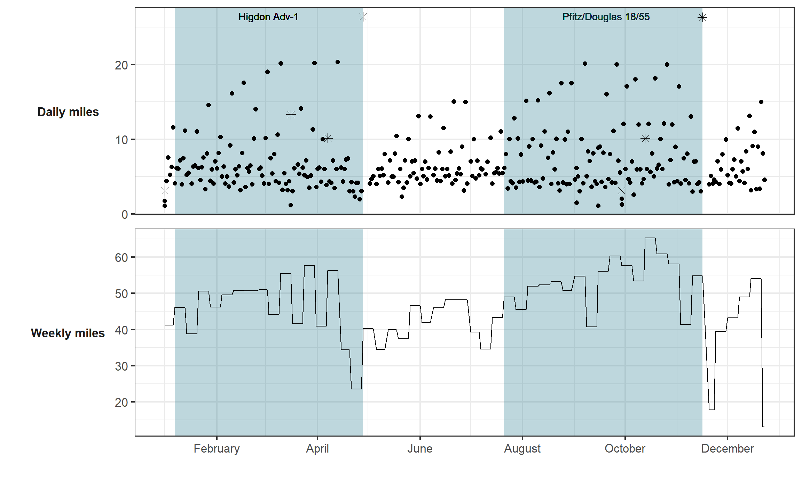

Training cycles
In 2024, I ran a total of 2404.7 miles over 338 days. The shape of my year was driven by two marathon training cycles: a 16-week cycle for the Eugene Marathon at the end of April (4/28/24), and an 18-week cycle for the Richmond Marathon held in November (11/16/2024).
I followed Hal Higdon’s Advanced-1 training plan for Eugene and the Pfitzinger & Douglas 18 week/55 mpw plan for Richmond. Evident here, the Pfitz plan included several more medium-long runs in the 10-14 mile range than the Higdon plan did.

Running dynamics that determine pace
Increasing cadence and stride length will both increase speed, but people vary in how much they increase cadence and stride length to achieve a faster pace. In fact, some super shoes are marketed as being for “cadence runners” or “stride runners” depending on which strategy they tend to use to speed up! Ground contact time (GCT) is another component of the speed puzzle - how much time the foot stays in contact with the ground while running - with a shorter GCT freeing up time for forward motion.
We can see the relationship between these determinants of pace in these paired scatterplots. On the diagonal, the distributions of each running variable is shown, with the two off-diagonal panels for each pair showing a scatterplot and the correlation value. Note the strong negative relationships between cadence and pace, and stride length and pace, but the positive correlation between stride length and cadence. Higher cadences and longer strides are each associated with a lower (=faster) pace, and cadence and stride length tend to increase together.
Am I a cadence- or stride-runner?
To compare the relative contributions of each of these factors to my pace, let’s build a model. I can’t do this without noting the huge statistical caveat here that these methods assume independence and my data are certainly not independent - there is likely correlation between successive runs, successive days and weeks, that is not being accounted for, so keep that in mind.
To put these variables on level-footing, I scaled them to see how a 1-standard deviation (1 SD) change in each would impact pace. Practically, this means we are looking at the impact of changing my cadence by about 7.5 steps/minute (1 SD of my cadence values), a 0.068 meter change in my stride length (1 SD of my stride length values), and a 12 millisecond change in my ground contact time (1 SD of GCT values).
However, there’s another level of complexity to consider: these variables are pretty biomechanically entangled. For example, increasing cadence when steps are longer will result in a larger increase in pace than increasing cadence by the same amount at a shorter stride length. Additionally, a longer ground contact time could negate the benefits of increased cadence or stride length. All that to say, these variables interact. I fit two models, one with a three-way interaction between cadence, stride length, and GCT, along with all two-way interactions (i.e., cadence and stride length, cadence and GCT, GCT and stride length) and main effect terms, and a second model containing the two-way interactions and main effects. By using a likelihood ratio test, we learn that the addition of the three-way interaction term significantly improves the fit of the model, so we will use the model containing all possible interaction terms.
Analysis of Variance Table
Model 1: avg_pace_s ~ cadence * stride_len + cadence * gct + gct * stride_len
Model 2: avg_pace_s ~ cadence * stride_len * gct
Res.Df RSS Df Sum of Sq Pr(>Chi)
1 345 9133.9
2 344 7523.5 1 1610.4 < 2.2e-16 ***
---
Signif. codes: 0 '***' 0.001 '**' 0.01 '*' 0.05 '.' 0.1 ' ' 1Coefficient estimates from the model containing all interaction terms:
| term | estimate | std.error | statistic | p.value |
|---|---|---|---|---|
| (Intercept) | 496.2886433 | 0.2882150 | 1721.938866 | 0.000000e+00 |
| cadence | -22.2035147 | 0.5471352 | -40.581402 | 3.370489e-133 |
| stride_len | -31.5741006 | 0.5142430 | -61.399183 | 1.946863e-187 |
| gct | 0.9776408 | 0.3214425 | 3.041417 | 2.535488e-03 |
| cadence:stride_len | 4.6286720 | 0.2945853 | 15.712504 | 2.575984e-42 |
| cadence:gct | -1.8105891 | 0.4906499 | -3.690185 | 2.604265e-04 |
| stride_len:gct | 1.1373101 | 0.3761488 | 3.023565 | 2.685796e-03 |
| cadence:stride_len:gct | -0.9041686 | 0.1053684 | -8.581022 | 3.278699e-16 |
To try to answer the question about whether an increase in cadence or stride length improves speed more, the interpretation of the model coefficients isn’t straightforward with all of the interaction terms. But we can use the model to get the estimated paces under several scenarios: my typical cadence and stride length, +1 SD to my cadence (i.e., 7.5 more steps/minute) at typical stride length, typical cadence at +1 SD to my stride length (strides 0.068 meters longer), and +1 SD to both my cadence and stride length (all of these at my typical GCT).
| Scenario | Estimated pace (min/mi) | Lower 95% CI | Upper 95% CI |
|---|---|---|---|
| Normal cadence, normal stride length | 8.27 | 8.26 | 8.28 |
| +1 SD cadence, normal stride length | 7.90 | 7.88 | 7.92 |
| Normal cadence, +1 SD stride length | 7.74 | 7.72 | 7.77 |
| +1 SD cadence, +1 SD stride length | 7.45 | 7.43 | 7.47 |
From this, we see that I’m slightly a stride-runner, but the best results occur when both cadence and stride length are increased.
More about ground contact time
I held ground contact time constant in the pace model because isn’t really voluntarily controlled like cadence and stride length are. However, there are cues and training that you can use to improve it in general. I tried to implement a couple techniques this year: a simple plyometrics routine and a form cue to drive the feet downward when running, letting forward swing be passive after hip extension (like a slingshot - Steve Magness). I was happy to see my GCT gradually decrease after I started trying to improve it around March.
Inexplicably, my GCT started to get worse in the weeks before and especially after the Richmond Marathon. On many of these runs, both tapering and then slowly resuming running, I was telling myself to slow down. This was especially frustrating during the taper, because I felt fresh and couldn’t seem to reign it in. I imagine that actively trying to slow down caused me to increase my GCT. I do wonder if changing mechanics set the stage for my ITBS, which started in late December.